ViaSat Inc. is a satellite communications company where I was a Product Innovation Intern last summer. I worked on the UI/UX of the ViaSat Residential Mobile App. I helped design a modular app UI intended for residential consumers. With the rest of the team, I created use case flows, interviewed test users, and considered the product's potential in the international, in-flight, and maritime contexts.
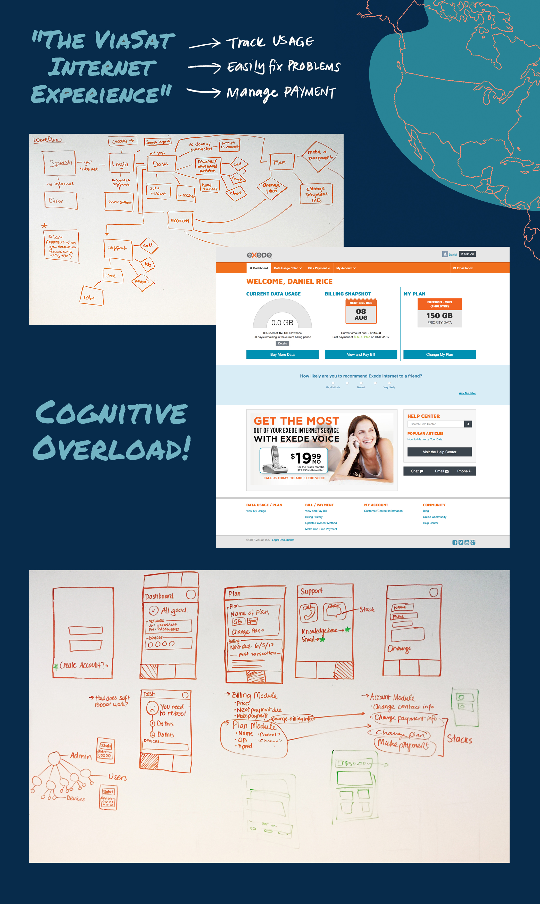 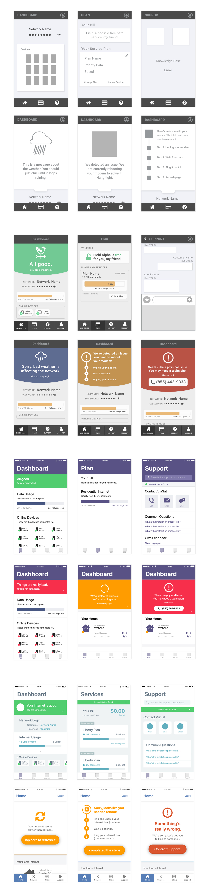 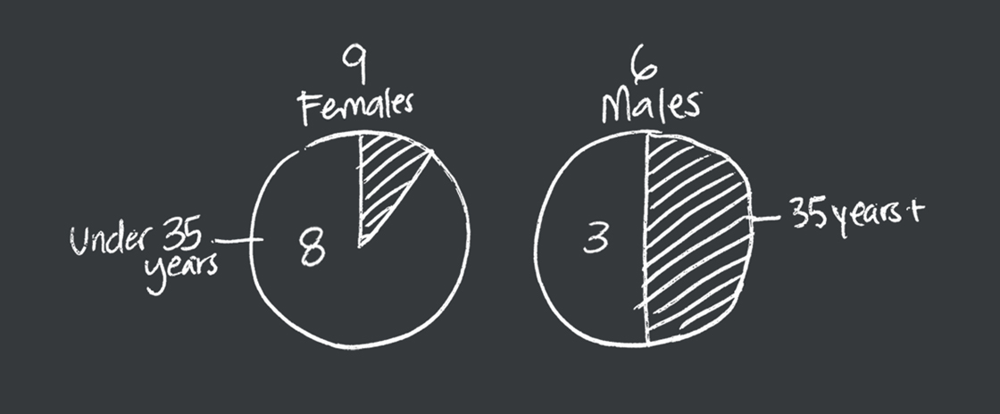 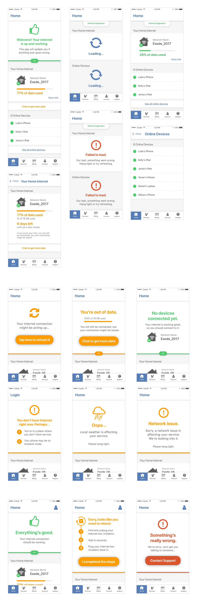 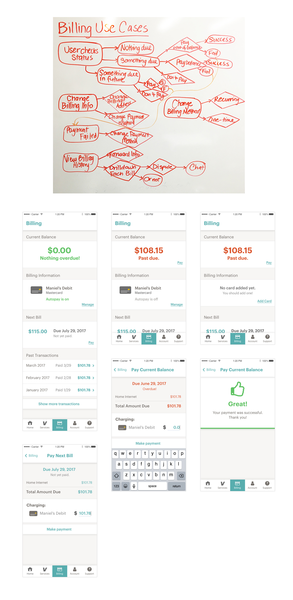 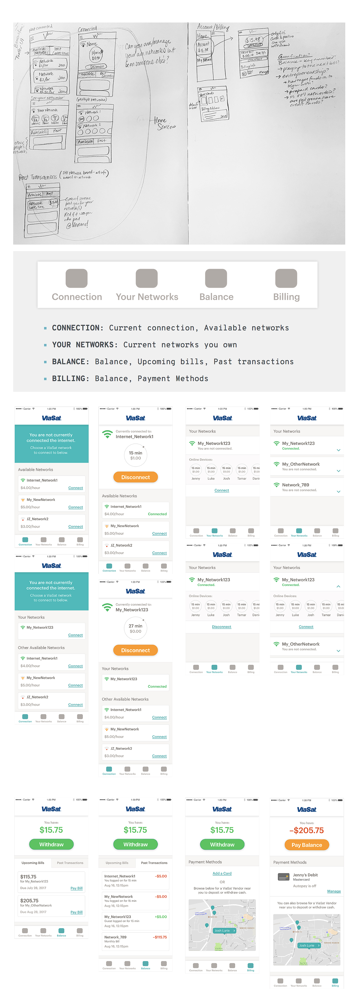Project
Process
ViaSatClick me!
1. Context and Research
ViaSat had a very confusing product line. While their satellite service was called ViaSat, their internet services were called "Exede." Therefore, the existing "ViaSat Internet Experience" was highly confusing. MyExede, Exede.com, Exede Customer Central, Exede Tools... it was too much.
To start, the UI/UX team and I reduced the information conveyed through these tools into some core user expectations:
- Check internet status/usage
- Pay bills and balance
- Troubleshoot internet
- Manage account info
To accomplish these functions, we created use case flows to map out possible actions of our app users. After identifying these paths and potential painpoints, we brainstormed a preliminary mobile app wireframe.
2. Design and Goals
Based on our use case flows, we created preliminary wireframes to define the information architecture of the Dashboard, Plan, and Support pages. We also created some basic troubleshooting states.
We went through a series of four design sprints. At the end of each, we did usability testing with Adobe XD prototypes to keep our design on track.
We borrowed from iOS and Android interfaces to standardize our app and make it easier and more familiar to use. However, we tested this UI and observed people actually struggling to parse content because of our size, color, and shape decisions (someone called our purple a "death purple").
To fix visual confusion, we more purposefully used color and made troubleshooting more descriptive. We reduced the amount of error states and focused on clearer, bigger buttons.
3. Hierarchy Testing
We did usability testing of the UI throughout the design sprints with users that fell into ViaSat's current demographic. We interviewed 15 subjects from a variety of backgrounds. Here's our pool divided into a male and female breakdown, as well as a breakdown based on age younger and older than 35 years old.
Biggest Takeaways
Billing vs. Account!?
The Billing and Account sections of the app shared much of the same information, and most of our testers got confused between what would belong in each. For example, some expected to see past bills in the Account section. Some of our older testers (60+) expected personal information like service address to also include the billing address.
Color Confusion
We realized the importance of color early on. In our earlier sprints, we implemented a lot of color into our elements but this threw off the visual hierarchy. People confused what was and wasn't clickable. We limited the use of color to be indicative of interactive elements.
- Clickable, non-error elements are blue.
- Green means a healthy network. No action.
- Yellow means that action should be taken.
- Red means an unhealthy network. Requires action.
Power of Language
Wording threw some testers off. For example, many younger testers saw the Soft Reboot flow and assumed immediately that they needed to physically reboot their modem — a habit many of us learn if we manage internet often. We reworded the troubleshooting states to be more vague and avoid trigger words like "reboot" and "restart" to prevent action when it isn't necessary.
4. Implementation
We implemented these insights into the interface design. These are our final MVP mockups.
Post-MVP
After designing the MVP, I fleshed out more of the expected and ideal app functionalities, specifically in Billing.
I grouped the ability to manage Account information into Billing for the MVP, but ideally, based on our testing, these two capabilities are separate. Billing should have its own navigational tab with many functions, including changing billing info, viewing pending bills, and interacting with payment history.
Future of Internet
While working on the post-MVP mockups, I was curious to take the design a step further by seeing how modules we created could work in other contexts, including international "Village Wi-Fi" markets. Across contexts, I identified 2 roles:
Basic Users
Basic users, or guests, don’t own their own networks. They can only pay to connect to networks owned by others. They have the ability to open the app and see their current connected network, available networks, balance, and billing options.
Vendors
Vendors can also pay to connect to networks owned by others, but they also own their own Wi-Fi networks and have the option to sell connection to them. They receive a startup kit with their dish setup and a system to deposit and withdraw cash*.
Here's a breakdown of a reimagined information architecture for these services:
Connection
This homepage will always display two modules: current connection status, and available networks. If you own your own network, it will display above all other available networks. On this page, you have the option to connecting to any available network, whether you're a basic user or a vendor.
Your Networks
This page displays the networks you own. Ideally, it features all online guests on each network and allow you to toggle settings for each guest. It will also give you more information regarding network management (dish location, network capacity, network hourly rate).
Balance
In addition to seeing your balance and potential action steps of paying it off or withdrawing, this page displays all interactions with your balance. It will show upcoming bills (what may need to come out of your balance), and past transactions (a history of what has altered your balance).
Billing
Mainly, I have considered the payment method to be by card, as that is how MVP and 1.1 will be done. In foreign contexts, prepaid solutions (discussed below) might be easier. As an introduction to how that might work, Vendors may also be able to help users deposit and withdraw cash at their physical location.
Prepaid System
My last consideration for the Village Wi-Fi system is how to get money into this internal economy.
In addition to managing their own networks, Vendors could potentially allow users to deposit and withdraw cash from their physical locations. Users can approach any vendor to fill their account with money and use that to pay for network usage in the ViaSat community by the hour. Likewise, users can visit Vendors to withdraw any positive balance they have in their account.
We may also consider an in-experience currency too: I thought about using data itself as the currency. Instead of paying an hourly rate, users would pay for their usage by GB. If they want to deposit into their ViaSat account, they would pay for GB with real money through a Vendor. GB in the app would convert into cash in the case of withdrawal.
Openhearth
For the 2017 Hult Prize, my team pitched Openhearth, a subscription-based, communal cooking space for refugees and city dwellers in Europe. The Hult Prize prompt required a business pitch to support, leverage, and aid the victims of worldwide refugee crises.
Openhearth is the cross-section of food, culture, and leveraging the industry of people as resources to help and grow each other. This deck is the visual effort to convey the warmth and community of food.
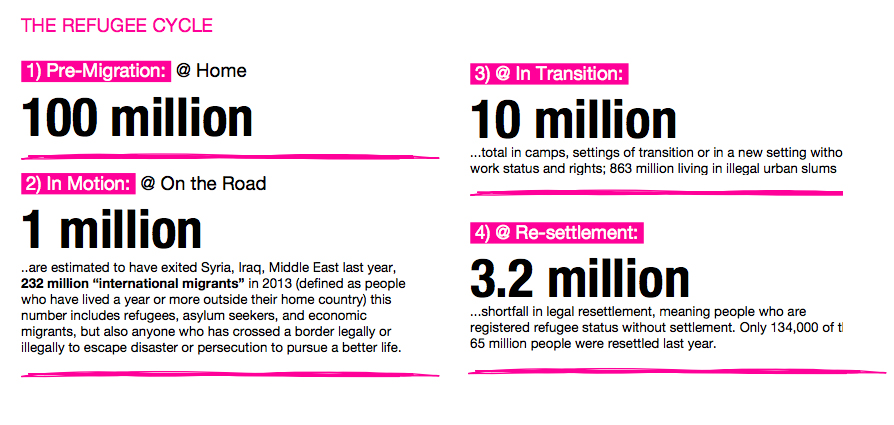


Collapse Openhearth
1. Context and Research
Based on research given to teams by the Hult Prize Foundation, we honed in on one single problem: many refugees arriving in European countries face problems of readjustment. They are lacking two things: stable access to cooking resources, and a comfortable, welcoming host community.
The Status Quo
Many who live in European cities face inconvenience when it comes to cooking. Especially for young urban professionals, working consumes most of their day, and food preparation not only involves the time spent cooking, but also purchasing groceries and cleaning.
Those who live in cities are typically more open-minded to learning new things and interested in having their daily lives outsourced or reinvented.
The Opportunity
Our idea is a space where those who lead busy lives have access to communal cooking facilities, groceries, and cooking lessons. They pay for a baseline monthly membership and can go in at any time to cook and eat. They pay per grocery item in bulk pricing (following a two-part tariff model), and they don't have to clean up!
A monthly membership follows a "one-for-one" model where paying for one membership covers the membership of a refugee (or someone without cooking resources). Cooking lessons can be led by refugees so they get a chance to be employed and share their culture with the people in the host community.
Think: gym meets community kitchen.
2. Design and Goals
Openhearth is the concept of a communal kitchen where customers with means can purchase a “buy one give one” subscription or pay-per-visit. In our building they have full access to all the supplies to cook what they want, and managing equipment, allocating ingredients, and cleaning are all handled for them.
Refugee Employment
Refugees will be employed to manage and clean the facilities and also will have the opportunity to run cooking classes, sharing their skills and values.
"Intramarket"
The Intramarket is a place inside Openhearth where members can sell extra food they made to other members. If there is even more surplus food, refugees may be employed to promote Openhearth and sell the food at local farmer’s markets.
Open Physical Space
The layout of the building will be spacious and logical. When you walk in, there will be tables to sit and eat at on one side, and the Intramarket to buy premade food on the other. Directly behind that are are the cooking facilities. In the back are all the cooking resources.
Adobe Education
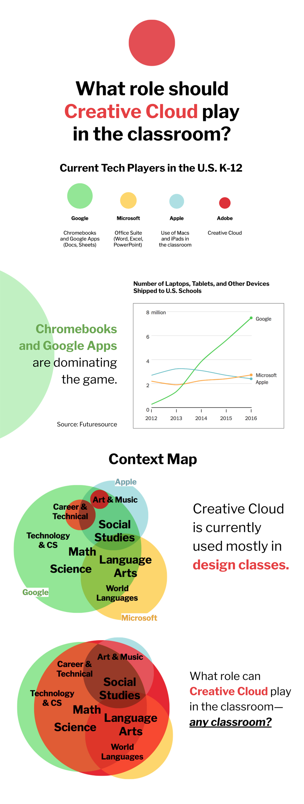
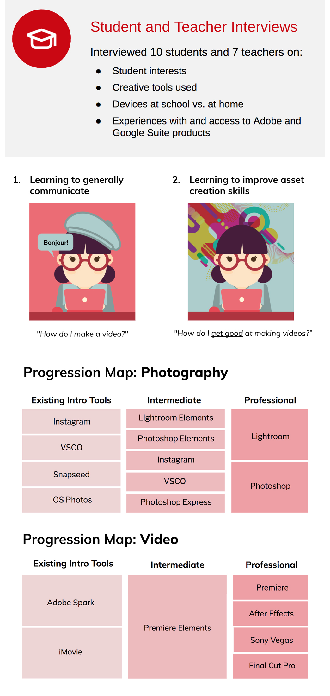
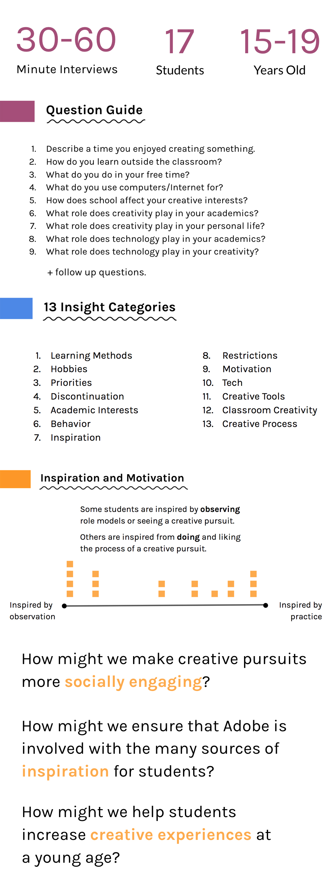
Collapse Adobe Education
1. Context and Research
This year, I'm working with a team of 9 doing creative consulting work for Adobe's Education department. This project is part of a class called Discerning and Making, in which we conduct market research, boil down painpoint insights, and develop a product for an industry.
For Adobe Education, we are working on specifically finding ways to penetrate the K-12 target audience. We have conducted extensive primary user research and secondary market research to pinpoint how young people under the age of 19 can become a dominant user base for Adobe products.
Round 1 of Research
Competitive Analysis
Technology in classrooms is currently dominated by Google—according to Futuresource, many students under age 19 are exposed to Google Chromebooks, Classroom, and their app suite. Microsoft products have a stronghold as well, followed by Apple's physical products. Adobe Creative Cloud is used, but dominantly in career and technical education (CTE) classes.
I'm an avid user of Adobe products, and I know their use cases beyond simply graphic design and video editing, which are just tools to connect dots to new ways of learning. For example, poster-making is a commonly used presentation technique. Music video projects receive a lot of love in foreign language classes.
Interview Insights
Through our first round of interviews with 10 students and 7 teachers, we broke down learners of Creative Cloud software into two categories:
- Concept-focused: Those who want to share an idea better, with less concern to craft.
- Skills-focused: Those who want to invest in their creative expression skills and learn the craft.
Skills-focused
This group includes people who use Photoshop or Sketch to make beautiful compositions, like hobbyists, artists, digital painters, videographers, photographers, etc. They will likely invest more time into tutorials, blogs, etc. because they're doing it for fun or to improve.
How might we ensure people who want to improve their technical skills are aware of all the ways they can?
Concept-focused
This group includes people who use Chromebook or Spark tools to present something in a better way, e.g. make presentations, videos for class, marketing materials, etc. They may be required to present by teachers, people looking for a better way to promote, share, brainstorm, and solve a problem. They are more focused on the topic than the tool.
How might we make "creative" a part of everyone's identity, like how being "literate" is?
We broke down Adobe's existing product portfolio and organized them into a progression to fit these two molds. The first column, "Existing Intro Tools", are what the concept-focused users gravitate towards. The third column, "Professional", are what the skills-focused aspire to master. The middle column is the on-ramp for the skills-inclined that might have been introduced to the product from a concept prompt, like a school project.
Not just in school!
By categorizing the K-12 audience in these categories, we moved away from school-specific research and opportunities. People are the interfaces they're surrounded by—school accounts for many of them, but more and more young people spend time discovering digital interfaces on their own time.
Round 2 of Research
For our second round, we conducted 17 in-depth, "day-in-the-life" conversations with current high school students. These interviews ranged from 30 minutes to 1 hour in length. We picked their brains. Some interesting notes:
Exposure
Many students were more inclined to physical creative activity, but those who were actually preferred digital interfaces were introduced to it at a younger age.
Role Models and Community
Many students had role models or external motivators, like their social setting. One student traded in their violin for a guitar, for example, because it was easier to take out in public.
Learning Methods
Each student had a different preferred way to learn their creative skills, but many enjoyed a mix of watching and doing.
As a team, we reviewed the notes of each interview together and boiled them down into one-sentence insights that we categorized into 13 themes. For each category, we discussed each insight and voted on the ones that we felt also applied to us, thereby involving ourselves (as previous high school students) in our data.
A handful of main insights rose to the top. For example, regarding inspiration and motivation, we were able to understand the spectrum of personalities that keep a student eager to learn versus discontinue.
From these insights, we crafted our most recent How Might We statements. This project is still a work-in-progress, but our next step is to finish the rest of our interviews and hone in conversations about these statements.
Al Jazeera
I wrote an essay about social media habits, making comparisons snacking. Through this lens, I examined the UI/UX of Al Jazeera's social media presence and mobile app, specifically footer AJ+.


"Often, when I’m bored and seeking some sort of satisfaction, I peek in my pantry for something to nibble on. I’ve noticed I do the same exact thing with my phone. Often, when I’m bored and seeking some sort of satisfaction, I peek at Facebook or Twitter on my phone for something to also consume."
Read the full article on Noteworthy.

"Current engagement metrics (based on the Benchmark Model) propose that one share is equal to 10 likes, creating a currency of “engagement points” based on Facebook interactions. However, this model limits how high we aim: if we only shoot for shares as engagement points, we will stop there."

"If AJ+ continues supporting stories as a editorial, opinion outlet, these too should have a call-to-action or behavioral prompt... Digesting AJ+ content can be a redemptive experience: users may glean a new opinion, strong takeaway, or a vehement revelation."

Collapse Al Jazeera
1. Context and Research
Young people keep up with at least two communities, always: we are members of our day-to-day friend circles, and now, thanks to the internet, we are members of an interconnected, global community too. While we can scroll through friends' vacations on Instagram for a quick fix of distraction, understanding the crises in Syria aren't as easily digestible. Many world updates can be intimidating and perhaps harrowing, especially to nibble on between errands.
The call-to-action in videos rarely goes beyond the two-second “Share this video!” closing sequence, if we even make it that far. AJ+ tackles topics not necessarily suitable for social media snacking.
2. Design and Goals
Poll-type Posts
AJ+ currently is a content-driven brand; its presence on social media is its videos. However, social media snacking leaves much of it undigested and not acted upon. Keeping short videos on social media is advantageous and consistent, but we can supplement these with poll-type posts.
New Feed Structure
Time can still be the defining axis and posts can still be chronological, but there needs to be a visual differentiator between news posts and more editorial, opinion-based material. While we can combine videos and stories altogether in one feed, the two types of content need to look different. A visual ontology will organize relevant news and opinions and easily allow users to scroll and pick content of interest.
More in-app conversation
Because most stories are comprised of videos, when I saw an “opinion dialog” for the first time in a set, I was caught off-guard... but in a good way. More of these dialogs, along with in-app polls like the ones I proposed for social media, would engage and empower users to stay involved.
Bite-sized for all
The home feed could feature a bundle of the “Top Five” pieces of content for the day. Each bite-sized video, blurb, or dialog could take a minute of time to consume. Ideally, the user could take five minutes out of their day—in the morning getting ready, eating lunch, etc.—and get up to speed with the interconnected, global community.
Update: Current Role
Writing this proposal for Al Jazeera led me to the opportunity to work for their new immersive journalism studio, Contrast VR! Right now, I'm researching the UI/UX of immersive content, and how to increase social media engagement.
Slide-Based Web Designer
As a web design freelancer, I'm always approached with jobs to create a quick one-page, static website. The most difficult part about this process is the lack of admin control—if the client wants the website edited post-development, I have to update it myself because it's static.
This WYSIWYG project is an effort to allow others to design easy, pleasing static websites (for now) without the robust complicated UI of WordPress or Webflow, the lack of customization of Squarespace, or the potentially semantic difficulty of Wix.


I also spend a lot of time looking at other websites for inspiration. Here are sample one-pager websites that are end products I would like my tool to be able to build:


Based on these examinations, I have drafted a preliminary mockup of my WYSIWYG editor, combining the editable components of Webflow with how Tumblr and WordPress manage content.
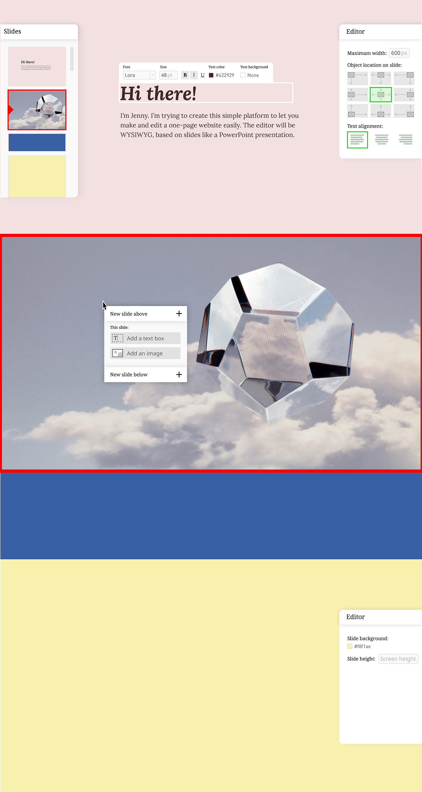Collapse Slide-Based Web Designer
1. Context and Research
Competitive Analysis
Webflow
Styles, settings, and interactions of elements are all editable entries in Webflow—this is the ideal setup in a WYSIWYG editor. Webflow appropriately divides the attributes and functions of an element. These panels run the gamut of what can be edited in CSS for a given web object.
Tumblr
Tumblr allows for less control over the element characteristics than Webflow. Tumblr themes control dominantly the visual frontend of the website, but the code of many themes allow for customization of superficial qualities, but these qualities only (not settings or interactions).
WordPress
Both WordPress and Tumblr platforms organize their posts (the equivalent of a Webflow collection item) on the backend, separate visually from frontend. It's seamless, but more disconnected than Webflow because it's not immediately clear where the content fields display on the frontend. Below is the editor interface for WordPress, and how it translates to the frontend.
A collection item should consist of fields that you can choose to populate your website design with. Populating these fields should be much easier than how Webflow, WordPress, or Tumblr allow content editing. This could be directly on the website design in a WYSIWYG fashion.
One-Pager Studies
My target products are often thesis statement websites. They tend to follow a natural grain, adhering to a few key components:
- Background
- Container
- Navigation
- Header
- Content
- Footer
What if...
The frontend could be easily populated in an "edit mode"? How can you create simple website with one or two collection items at most in a templated platform?
2. Design and Goals
Slides-Based Concept
I'm in the process of developing this slides-based website designer. It will store basic content in the form of "slides", in which image and text elements are editable using Draft.js.
Why Slides-based?
My insight into this stems from my observations of Webflow vs. Wix. Though real, robust designers prefer Webflow, it's only because that structure of thinking makes sense to us. Most people don't think in divs.
People like Wix because it is drag-and-drop, and it is intuitive. I thought about other intuitive programs in my life, and my favorite ones are PowerPoint and Keynote. These were the easiest programs to pick up.
As I brainstormed the key components of a one-pager, I noticed that all the elements are often stacked and organized in a hierarchal way, much like like a presentation. If people are used to the likes of presentation software anyway (it's taught everywhere in schools, used at work, etc.), familiar UI to the unfamiliar world of website building might be the best approach.
Product Flow Outline
- Upon load, the page presents you with a workspace containing a very basic website template with a series of modules (except text styles).
- The user may click on these elements and edit its shape, size, positioning, and the text styles within each of these elements.
- Modules can be locked; this will symbolize relative or absolute positioning.
- Padding and margins will be drag-and-drop.
- Colors will be picked from a color picker.
- Text styles will be edited like WYSIWYG editors (e.g. tinyMCE).
- In another panel, you can toggle between the setting the website template in Mobile, Mid-Size, or Desktop mode.
- You can also create a collection of entries and manage these in another ancillary panel. You determine and populate the content fields for entries.
- Once collection items are created, they are saved to a database. You can populate elements with a collection item's fields and design its modules, as detailed above.
- After the user is done designing, they can save their pages and export their entire website, including the database, HTML files, and Sass stylesheet.